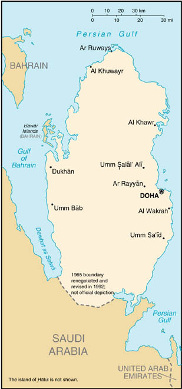

|
Qatar | |
| Introduction Geography People Government Economy Communications Transportation Military Transnational Issues | ||
|  | ||
| Qatar | Introduction | Top of Page |
| Background: | Ruled by the Al Thani family since the mid-1800s, Qatar transformed itself from a poor British protectorate noted mainly for pearling into an independent state with significant oil and natural gas revenues. During the late 1980s and early 1990s, the Qatari economy was crippled by a continuous siphoning off of petroleum revenues by the amir who had ruled the country since 1972. He was overthrown by his son, the current Amir HAMAD bin Khalifa Al Thani, in a bloodless coup in 1995. In 2001, Qatar resolved its longstanding border disputes with both Bahrain and Saudi Arabia. Oil and natural gas revenues enable Qatar to have a per capita income not far below the leading industrial countries of Western Europe. |
| Qatar | Geography | Top of Page |
| Location: | Middle East, peninsula bordering the Persian Gulf and Saudi Arabia |
| Geographic coordinates: | 25 30 N, 51 15 E |
| Map references: | Middle East |
| Area: |
total:
11,437 sq km
land: 11,437 sq km water: 0 sq km |
| Area - comparative: | slightly smaller than Connecticut |
| Land boundaries: |
total:
60 km
border countries: Saudi Arabia 60 km |
| Coastline: | 563 km |
| Maritime claims: |
contiguous zone:
24 NM
exclusive economic zone: as determined by bilateral agreements or the median line territorial sea: 12 NM |
| Climate: | desert; hot, dry; humid and sultry in summer |
| Terrain: | mostly flat and barren desert covered with loose sand and gravel |
| Elevation extremes: |
lowest point:
Persian Gulf 0 m
highest point: Qurayn Abu al Bawl 103 m |
| Natural resources: | petroleum, natural gas, fish |
| Land use: |
arable land:
1%
permanent crops: 0% permanent pastures: 5% forests and woodland: 0% other: 94% (1993 est.) |
| Irrigated land: | 80 sq km (1993 est.) |
| Natural hazards: | haze, dust storms, sandstorms common |
| Environment - current issues: | limited natural fresh water resources are increasing dependence on large-scale desalination facilities |
| Environment - international agreements: |
party to:
Biodiversity, Climate Change, Desertification, Hazardous Wastes, Ozone Layer Protection
signed, but not ratified: Law of the Sea |
| Geography - note: | strategic location in central Persian Gulf near major petroleum deposits |
| Qatar | People | Top of Page |
| Population: | 769,152 (July 2001 est.) |
| Age structure: |
0-14 years:
25.77% (male 101,155; female 97,086)
15-64 years: 71.75% (male 391,178; female 160,665) 65 years and over: 2.48% (male 13,625; female 5,443) (2001 est.) |
| Population growth rate: | 3.18% (2001 est.) |
| Birth rate: | 15.91 births/1,000 population (2001 est.) |
| Death rate: | 4.26 deaths/1,000 population (2001 est.) |
| Net migration rate: | 20.12 migrant(s)/1,000 population (2001 est.) |
| Sex ratio: |
at birth:
1.05 male(s)/female
under 15 years: 1.04 male(s)/female 15-64 years: 2.43 male(s)/female 65 years and over: 2.5 male(s)/female total population: 1.92 male(s)/female (2001 est.) |
| Infant mortality rate: | 21.44 deaths/1,000 live births (2001 est.) |
| Life expectancy at birth: |
total population:
72.62 years
male: 70.16 years female: 75.21 years (2001 est.) |
| Total fertility rate: | 3.17 children born/woman (2001 est.) |
| HIV/AIDS - adult prevalence rate: | 0.09% (1999 est.) |
| HIV/AIDS - people living with HIV/AIDS: | NA |
| HIV/AIDS - deaths: | NA |
| Nationality: |
noun:
Qatari(s)
adjective: Qatari |
| Ethnic groups: | Arab 40%, Pakistani 18%, Indian 18%, Iranian 10%, other 14% |
| Religions: | Muslim 95% |
| Languages: | Arabic (official), English commonly used as a second language |
| Literacy: |
definition:
age 15 and over can read and write
total population: 79% male: 79% female: 80% (1995 est.) |
| Qatar | Government | Top of Page |
| Country name: |
conventional long form:
State of Qatar
conventional short form: Qatar local long form: Dawlat Qatar local short form: Qatar note: closest approximation of the native pronunciation falls between cutter and gutter, but not like guitar |
| Government type: | traditional monarchy |
| Capital: | Doha |
| Administrative divisions: | 9 municipalities (baladiyat, singular - baladiyah); Ad Dawhah, Al Ghuwayriyah, Al Jumayliyah, Al Khawr, Al Wakrah, Ar Rayyan, Jarayan al Batinah, Madinat ash Shamal, Umm Salal |
| Independence: | 3 September 1971 (from UK) |
| National holiday: | Independence Day, 3 September (1971) |
| Constitution: | provisional constitution enacted 19 April 1972; in July 1999 Amir HAMAD issued a decree forming a committee to draft a permanent constitution |
| Legal system: | discretionary system of law controlled by the amir, although civil codes are being implemented; Islamic law is significant in personal matters |
| Suffrage: | suffrage is limited to municipal elections |
| Executive branch: |
chief of state:
Amir HAMAD bin Khalifa Al Thani (since 27 June 1995 when, as crown prince, he ousted his father, Amir KHALIFA bin Hamad Al Thani, in a bloodless coup); Crown Prince JASSIM bin Hamad bin Khalifa Al Thani, third son of the monarch (selected crown prince by the monarch 22 October 1996); note - Amir HAMAD also holds the positions of minister of defense and commander-in-chief of the armed forces
head of government: Prime Minister ABDALLAH bin Khalifa Al Thani, brother of the monarch (since 30 October 1996); Deputy Prime Minister MUHAMMAD bin Khalifa Al Thani, brother of the monarch (since 20 January 1998) cabinet: Council of Ministers appointed by the monarch elections: none; the monarch is hereditary note: in March 1999 Qatar held nationwide elections for a 29-member Central Municipal Council, which has consultative powers aimed at improving the provision of municipal services |
| Legislative branch: |
unicameral Advisory Council or Majlis al-Shura (35 seats; members appointed)
note: the constitution calls for elections for part of this consultative body, but no elections have been held since 1970, when there were partial elections to the body; Council members have their terms extended every four years since |
| Judicial branch: | Court of Appeal |
| Political parties and leaders: | none |
| Political pressure groups and leaders: | none |
| International organization participation: | ABEDA, AFESD, AL, AMF, CCC, ESCWA, FAO, G-77, GCC, IAEA, IBRD, ICAO, ICRM, IDB, IFAD, IFRCS, IHO (pending member), ILO, IMF, IMO, Inmarsat, Intelsat, Interpol, IOC, ISO (correspondent), ITU, NAM, OAPEC, OIC, OPCW, OPEC, UN, UNCTAD, UNESCO, UNIDO, UPU, WHO, WIPO, WMO, WTrO |
| Diplomatic representation in the US: |
chief of mission:
Ambassador Badr Umar al-DAFA
chancery: 4200 Wisconsin Avenue NW, Washington, DC 20016 telephone: [1] (202) 274-1600 FAX: [1] (202) 237-0061 consulate(s) general: Houston |
| Diplomatic representation from the US: |
chief of mission:
Ambassador Elizabeth Davenport MCKUNE
embassy: 22 February Road, Doha mailing address: P. O. Box 2399, Doha telephone: [974] 488 4101 FAX: [974] 488 4298 note: workweek is Saturday-Wednesday |
| Flag description: | maroon with a broad white serrated band (nine white points) on the hoist side |
| Qatar | Economy | Top of Page |
| Economy - overview: | Oil accounts for more than 30% of GDP, roughly 80% of export earnings, and 66% of government revenues. Proved oil reserves of 3.7 billion barrels should ensure continued output at current levels for 23 years. Oil has given Qatar a per capita GDP comparable to that of the leading West European industrial countries. Qatar's proved reserves of natural gas exceed 7 trillion cubic meters, more than 5% of the world total, third largest in the world. Production and export of natural gas are becoming increasingly important. Long-term goals feature the development of offshore petroleum and the diversification of the economy. In 2000, Qatar posted its highest ever trade surplus of $6 billion, due mainly to high oil prices and increased natural gas exports. |
| GDP: | purchasing power parity - $15.1 billion (2000 est.) |
| GDP - real growth rate: | 4% (2000 est.) |
| GDP - per capita: | purchasing power parity - $20,300 (2000 est.) |
| GDP - composition by sector: |
agriculture:
1%
industry: 49% services: 50% (1996 est.) |
| Population below poverty line: | NA% |
| Household income or consumption by percentage share: |
lowest 10%:
NA%
highest 10%: NA% |
| Inflation rate (consumer prices): | 2.5% (2000) |
| Labor force: | 233,000 (1993 est.) |
| Unemployment rate: | NA% |
| Budget: |
revenues:
$3.9 billion
expenditures: $4 billion, including capital expenditures of $NA (1999 est.) |
| Industries: | crude oil production and refining, fertilizers, petrochemicals, steel reinforcing bars, cement |
| Industrial production growth rate: | NA% |
| Electricity - production: | 9 billion kWh (1999) |
| Electricity - production by source: |
fossil fuel:
100%
hydro: 0% nuclear: 0% other: 0% (1999) |
| Electricity - consumption: | 8.37 billion kWh (1999) |
| Electricity - exports: | 0 kWh (1999) |
| Electricity - imports: | 0 kWh (1999) |
| Agriculture - products: | fruits, vegetables; poultry, dairy products, beef; fish |
| Exports: | $9.8 billion (f.o.b., 2000 est.) |
| Exports - commodities: | petroleum products 80%, fertilizers, steel |
| Exports - partners: | Japan 52%, Singapore 9%, South Korea 8%, US, UAE (1998) |
| Imports: | $3.8 billion (f.o.b., 2000 est.) |
| Imports - commodities: | machinery and transport equipment, food, chemicals |
| Imports - partners: | UK 10%, Japan 8%, Germany 6%, US 6%, Italy 6% (1998) |
| Debt - external: | $13.1 billion (2000 est.) |
| Economic aid - recipient: | $NA |
| Currency: | Qatari rial (QAR) |
| Currency code: | QAR |
| Exchange rates: | Qatari rials per US dollar - 3.6400 (fixed rate) |
| Fiscal year: | 1 April - 31 March |
| Qatar | Communications | Top of Page |
| Telephones - main lines in use: | 142,000 (1997) |
| Telephones - mobile cellular: | 43,476 (1997) |
| Telephone system: |
general assessment:
modern system centered in Doha
domestic: NA international: tropospheric scatter to Bahrain; microwave radio relay to Saudi Arabia and UAE; submarine cable to Bahrain and UAE; satellite earth stations - 2 Intelsat (1 Atlantic Ocean and 1 Indian Ocean) and 1 Arabsat |
| Radio broadcast stations: | AM 6, FM 5, shortwave 1 (1998) |
| Radios: | 256,000 (1997) |
| Television broadcast stations: | 2 (plus three repeaters) (1997) |
| Televisions: | 230,000 (1997) |
| Internet country code: | .qa |
| Internet Service Providers (ISPs): | 1 (2000) |
| Internet users: | 45,000 (2000) |
| Qatar | Transportation | Top of Page |
| Railways: | 0 km |
| Highways: |
total:
1,230 km
paved: 1,107 km unpaved: 123 km (1996) |
| Waterways: | none |
| Pipelines: | crude oil 235 km; natural gas 400 km |
| Ports and harbors: | Doha, Halul Island, Umm Sa'id (Musay'id) |
| Merchant marine: |
total:
25 ships (1,000 GRT or over) totaling 677,992 GRT/1,049,447 DWT
ships by type: cargo 10, combination ore/oil 2, container 7, petroleum tanker 6 (2000 est.) |
| Airports: | 4 (2000 est.) |
| Airports - with paved runways: |
total:
2
over 3,047 m: 2 (2000 est.) |
| Airports - with unpaved runways: |
total:
2
914 to 1,523 m: 1 under 914 m: 1 (2000 est.) |
| Heliports: | 1 (2000 est.) |
| Qatar | Military | Top of Page |
| Military branches: | Army, Navy, Air Force, Public Security |
| Military manpower - military age: | 18 years of age |
| Military manpower - availability: |
males age 15-49:
312,116
note: includes non-nationals (2001 est.) |
| Military manpower - fit for military service: | males age 15-49: 163,642 (2001 est.) |
| Military manpower - reaching military age annually: | males: 6,797 (2001 est.) |
| Military expenditures - dollar figure: | $723 million (FY00/01) |
| Military expenditures - percent of GDP: | 10% (FY00/01) |
| Qatar | Transnational Issues | Top of Page |
| Disputes - international: | in March of 2001, the International Court of Justice (ICJ) awarded the Hawar Islands to Bahrain and adjusted its maritime boundary with Qatar; a final border resolution was agreed to with Saudi Arabia in March of 2001 |
{kind=link}